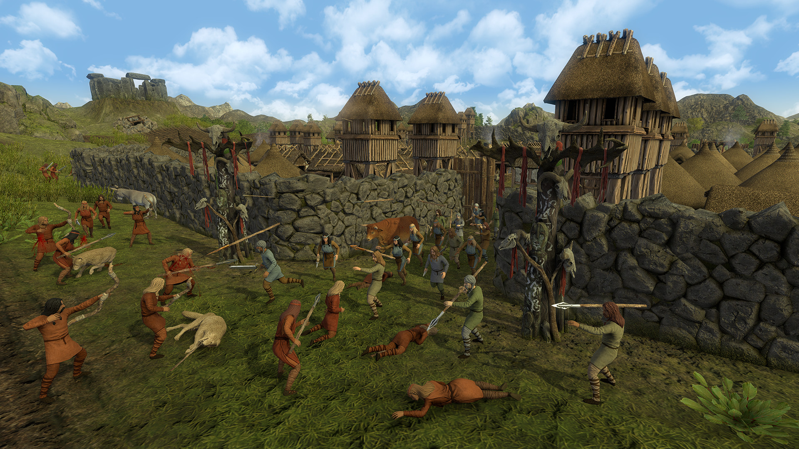
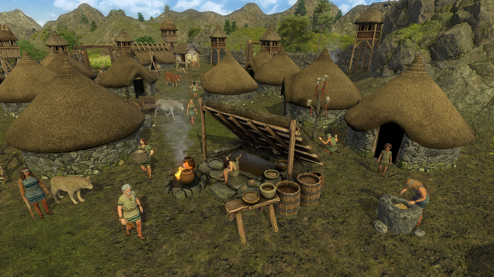

Dawn of Man
Mike Zhao
August 1, 2019
Dawn of Man
Madruga Works, $24.99
For 200,000 years, human beings survived by hunting animals and gathering wild plants. We lived in small bands of 20–150 people that moved with the availability of fresh food. If you lived in one of these bands, chances were that its members were the only human beings you would ever meet more than once. After all, the human population then was a tiny fraction of its current number: the entire world population toward the end of the Paleolithic (or Old Stone Age) never exceeded 10 million.
Around 12,000 years ago, at the start of the Neolithic (New Stone Age), humans started to trade in their nomadic, hunter-gatherer lifestyle for a sedentary, agrarian one: we stopped hunting and gathering wild plants, and began tilling the soil for a living. Humans made the shift to agriculture independently in several different parts of the world: first in the Fertile Crescent, then in China and New Guinea, and then in the Americas and sub-Saharan Africa.
We still don’t entirely understand the reasons for the transition. But whatever they were, it was one of the most important ever to happen to our species. According to the standard narrative of human prehistory, the Neolithic Revolution—the adoption of agriculture, domestication of wild animals, and settled life—increased the population that an area of land could sustain, which allowed for large-scale settlements and food surpluses. This made a division of labor possible. For the first time, a portion of human beings no longer had to produce food, and could devote themselves to other things: weaving, metalworking, brewing, and so on. This division in labor, in turn, led to advances that made almost everything that we associate with civilization possible: writing, technology, monuments, cities, and so on.
The transition of humanity from small, nomadic, hunter-gatherer groups to larger, sedentary farming communities is also the subject of a game released earlier this year, Dawn of Man. In the game, you lead a small band of humans from the Paleolithic to the Iron Age, hunting and gathering, building a settlement, planting and harvesting crops, and fending off raiders along the way. The game seems to buy into the standard narrative: your villagers start out in a sorry state, wearing animal skins and living in huts. As you advance through the ages, unlocking new technologies, their lives improve; in the final age, they are sitting pretty in their wool clothes and stone houses.
In the last few decades, however, the standard narrative has come under attack. The growing consensus among archaeologists is that the vast majority of people living in settled, agrarian communities had lives that were, on most important measures, worse than those lived by their nomadic counterparts.
Consider, as one example, food. We now know that hunter-gatherers ate a varied diet of meat, fish, wild fruits and vegetables, and wild grains. In contrast, agrarian fare consisted largely of grains, supplemented by dairy or plant protein. Most of one's calories would come from a single source, like barley. This diet would have been high in carbohydrates but low in many essential nutrients. As a result of subsisting on it, early farmers had a host of health issues—like diabetes, anemia, and rickets—largely absent from hunter-gatherer groups.
One striking illustration of how diverse the hunter-gatherer diet was and how impoverished it became with agriculture can be found in the site of Abu Hureyra in modern Syria. At this site, occupied for millennia before and after the transition to agriculture, archaeologists found traces of the foods eaten by the inhabitants. They found evidence for 192 species of plants eaten during the hunter-gatherer phase. The figure for the agriculturalist phase? Only eight.1 (The game does a pretty good job of representing the decline in food choice: you start off by hunting dozens of species of animals and gathering a number of wild plants, but you end up getting almost all of your food from a few crops and domesticated animals.)
Disease also became more common, taking advantage both of the higher population densities sustained by agriculture and of cohabitation with domesticated animals. Many of the most deadly diseases, like smallpox, tuberculosis, and influenza, were zoonoses, spread from animals to human beings, and may have been first transmitted across the species barrier during the Neolithic. In fact, the higher rates of disease are an important reason why world population seems not to have grown by much in the first 5,000 years after the Neolithic Revolution, despite higher birth rates among farmers than hunter-gatherers.
In addition, farming was far more tedious and labor-intensive than hunting and gathering. The anthropologist Ross Sackett, in his PhD dissertation, showed that members of modern-day hunter-gatherers work only about six-and-a-half hours a day on average, in contrast to the nine hours worked by members of agrarian societies.2 Given that modern-day hunter-gatherers typically occupy marginal lands unfit for agriculture, Paleolithic hunter-gatherers (many of whom lived in more hospitable lands) may have worked even less than six-and-a-half hours a day. And not only did early farmers work longer than hunter-gatherers; they also worked harder: skeletons of early farmers show a number of disorders, like slipped disks and arthritis, rare for hunter-gatherers.
The combination of a poor diet, disease, and occupational hazards meant that life expectancy decreased during the Neolithic, and would not rebound to Paleolithic levels until the 20th century. And we know from fieldwork done by the anthropologist J. Lawrence Angel that average adult height decreased by a staggering five to six inches from the late Paleolithic into the Neolithic, a decline that human beings still have not fully recovered from.3
Finally, the switch to agriculture and settlement drastically changed the quality of our social relations. We know, based on evidence from modern-day groups, that within hunter-gatherer groups, relations are fairly egalitarian: meat is often distributed equally among households, and decisions are typically made in a decentralized process. (The egalitarian, anarchic ethos of hunter-gatherer groups formed the basis for the Marxian myth of “primitive communism.”) These dynamics work well only for small groups. Studies of modern-day hunter-gatherers from many parts of the world show that groups are almost never larger than 150 people; if the population exceeds that number, the band usually splits in two. In fact, there is evidence that 150 is a limit that is hardwired into the human brain: the anthropologist Robin Dunbar hypothesized that, given the neural limitations of our brain, 150 (“Dunbar’s number”) represents an upper limit to the size of groups in which everyone knows everyone else and knows how each person is related to everyone else.4
The early Neolithic was able to maintain the relative egalitarianism of our hunter-gatherer past: excavations of early Neolithic sites show that dwelling were roughly the same size, which indicates little stratification in terms of wealth. But as groups grew, the mechanisms that were effective for small hunter-gatherer bands became ineffective. Some settlements from the Neolithic contained thousands of people, and it is hard in groups of this size to make decisions in a decentralized way. This led to the emergence of chiefs, who had the authority to settle disputes among group members and to make decisions on behalf of the entire group. In addition, the food surpluses generated by agriculture allowed for a division of labor, which created differences in status based on occupation. These developments set the stage for deeply hierarchical relationships to form, leading eventually to the rise of the state, hereditary monarchy, caste systems, and unequal relations between the sexes. If you don’t like any of these things, you can place ultimate blame on the Neolithic Revolution.
Another aspect of this social transformation is that violence became more common during the Neolithic. It’s a matter of intense controversy exactly how much killing our Paleolithic forebears were up to: some think that ancient hunter-gatherers were largely peaceful, with no incentive to go to war, while others argue that they were much more violent than humans alive today. Given that we spent almost all of our history in hunter-gatherer groups, so that they approach anything we could call a state of nature, the fight over violence in these groups is often seen as a major battle in the war over whether human nature itself is peaceful or violent. The game takes a stance on this controversy, letting you survive the Paleolithic irenically, but sending raiders your way starting in the Neolithic. (At one point, one of the loading-screen tips explicitly claims that while violence was rare during the Paleolithic, it became common during the Neolithic.)
What we know for certain is that, however bloody or tranquil the Paleolithic was, life after the Neolithic Revolution was more violent than before. For one, the population density in the Paleolithic was low enough that you could never run into another band competing for the same resources as yours; this kept rates of inter-group violence low in most areas. Second, unlike nomadic hunter-gatherers, who don’t store much food (it’s hard to maintain a stockpile when you’re on the go), sedentary farmers must store their harvest. This makes those farmers a much more enticing target for would-be raiders. And finally, unlike hunter-gatherers, who can always decide to flee when attacked, farmers have too much invested in their land to give up without a fight.
All of these factors contribute initially to inter-group violence. Once the threat of violence from other groups exists, each group has incentive to attack other groups preemptively, to eliminate possible aggression in the future. The threat of violence thus becomes a self-fulfilling prophecy, creating violence. Revenge also likely contributed to further violence: the survivors of a raid might avenge those killed by attacking the perpetrators, which might trigger another retaliatory raid, and this cycle of vengeance might continue indefinitely.
The walls surrounding Neolithic settlements are a testament to the brutality of the times. Archaeologists have also found numerous mass burials from the Neolithic, filled with skulls that show signs of blunt trauma: a blow to the head from an axe, perhaps. We don’t have exact figures for the homicide rate thousands of years ago, but we can draw up estimates based on evidence from a large number of burial sites. According to one commonly-cited figure, taken from Steven Pinker’s book on the history of violence,5 humans living in prehistoric non-state societies had roughly a 15% chance of dying by someone else’s hand. (The corresponding figure for most of the world today is less than 1%.)
In light of the archeological data, one might look back at the Paleolithic as an Edenic golden age for humanity, one in which disease was rare, food was varied and high-quality, violence was contained, and people treated one another equitably. Some have even suggested that memory of the transition from hunting and gathering to agriculture is embedded in stories like the expulsion of mankind from the Garden of Eden, with the curse that man would eat only by tilling the thorny ground. Lest we idealize, it’s important to note that life in the Paleolithic wasn’t all milk and honey. For one, life expectancy was abysmal: you could expect to live only into your mid-30s. Without medicine, an infection caused by a small wound could be lethal. But compared to what was to follow, life as a hunter-gatherer was idyllic.
The fact that the adoption of agriculture was such a disaster for most of humanity prompts an obvious question: why? If we were so much better off living a nomadic, hunter-gatherer lifestyle, why did we ever turn to farming?
One school of thought argues that people were forced into agriculture as a response to population growth. After all, the main advantage that agriculture has over hunting and gathering is that it can support a larger population density: it produces more calories per unit of land. Once the population in a certain area exceeded a certain density, hunting and gathering no longer sufficed, and people had to turn to more intensive modes of food production. (This is, by the way, why you have to turn to farming in Dawn of Man: as your village grows in size, it takes a larger and larger area to provide the resources needed to support it through hunting and gathering, until that area becomes impractically large.) But one major flaw in this explanation is that it doesn’t explain why agriculture began independently at roughly the same time (give or take a few millennia, which is nothing on the scale of human prehistory) in multiple places on Earth. After all, we wouldn’t expect all of these areas to have undergone the same demographic pressures at around the same time.
Another explanation, offered by people like the geneticist Spencer Wells,6 is that there were changes in the climate that made game and wild plants less plentiful. We know that around 13,000 years ago, Earth experienced a 1,000-year ice age, called the Younger Dryas. (The name comes from the plant Dryas octopetala, which thrives in harsh climates and appears in the fossil record during ice ages.) The colder and drier weather would have reduced the amount of food that humans could hunt and gather, forcing them to rely more on more on a smaller number of cold- and drought-resistant plants, like wild wheat and rye. Perhaps one day, someone chanced upon the idea of simply planting these plants near the settlement rather than having to make the trek to gather them, and agriculture was born.
The political scientist James C. Scott, in his book Against the Grain,7 disputes this theory. He notes that agriculture was adopted first in areas characterized by abundance, and that there is no firm evidence for a decline in wild plants or animals where intensive agriculture began. Despite the shortcomings of the theory, though, Scott admits that there are no better competitors out there.
Whatever the reason that humans initially adopted agriculture, Scott thinks that the development of states—political entities with a monopoly on force in its territory—encouraged its propagation, especially in the form of cereal agriculture, the harvesting of grasses like barley, wheat, and millet. After all, cereals are the perfect foodstuff to tax: A tax collector could simply survey your fields at harvesttime and estimate how much grain you owed. If you were remiss, the state could simply send people with scythes to reap its due. And grains are much harder to hide than plants like tubers, making tax evasion difficult. For this single reason, states had strong incentive to encourage the adoption of grain agriculture by its inhabitants—and to expand its agricultural population through war, capturing people and resettling them as farmers in its territory.
Another reason that agriculture did so well while hunting and gathering has all but disappeared as a lifestyle is that, because agriculture sustains much larger populations, agrarian societies quickly outbred hunter-gatherer groups. Hunter-gatherers cannot afford to have too many children, since each new mouth to feed puts increasing pressure on the environment. For this reason, they practice forms of population control like prolonged breastfeeding (which reduces fertility), abortion, and occasional infanticide. In agrarian societies, this disincentive to reproduce is not as strong—after all, any additional children could earn their keep by helping in the fields.
The faster growth rates of agrarian societies meant that agriculturalists would often expand into land inhabited by hunter-gatherers, either assimilating them (in the happy cases) or killing them off (in the less happy ones). Some of these displacements of hunter-gatherers by agriculturalists took place fairly recently. Much of the European gene pool derives from a group of farmers who arrived in Europe from Anatolia about 9,000 years ago, who drove back the original inhabitants to the fringes of the continent. More recently, we know that rice farmers from the Korean peninsula migrated to Japan about 3,000 years ago, displacing the native hunter-gatherers. And sub-Saharan Africa was home to a large number of ethnic groups, all very distinct from one another, including the Pygmies of the Congo and the Khoisan, before the expansion of Bantu farmers from West Africa forced them into the deep jungles and desert. Our modern-day image of hunter-gatherers as living on the edge of starvation is very much a result of this process: if they are, it is because the ancestors of modern-day agriculturalists forced them into inhospitable lands.
In the end, then, farming won out over hunting and gathering not because it is a better lifestyle, but simply because farmers had more children. Still, even if the development of agriculture was a disaster for human welfare in the short term, modern-day readers might be glad that our ancestors stuck with farming. After all, our lives are better in many ways than those of the bands living in the Paleolithic. We have a life expectancy longer than 35, modern medicine, air conditioning, smartphones, and access to the cultural output of human civilization. In the last century or so, industrialization has allowed us (at least, those in wealthy countries) to live comfortable lives. We might think of the adoption of agriculture as an inadvertent long-term investment that has finally, in the last century, paid off.
Nonetheless, aspects of hunter-gatherer life might still be objects of admiration or even envy. The leisure available to hunter-gatherers compares favorably to the toil of our lives: almost a century after John Maynard Keynes predicted that we would be working 15 hours a week, the 40-hour workweek is still the norm. And while hunter-gatherer groups use most of their leisure time socializing, we spend over half of it watching TV.8 Similarly, we might admire the ethos of hunter-gatherer groups, their egalitarianism and sense of community. Consider the sense of isolation inherent in modern-day urban life: since 150 seems to be an upper bound for the number of meaningful social relations humans can have, and we might interact with thousands each day, most of these interactions are completely meaningless. In these environments, far from those under which our sociality evolved, we might feel completely alienated from our fellow human beings.
Perhaps the question of whether our lives are better is moot: our encounter with our hunter-gatherer ancestors is merely notional, existing only in the mind. We might look with envy on certain aspects of their life, or sigh with relief at the thought that we do not have to endure others. But we cannot, except in video games, retrace their steps.
1. A.M.T. Moore, G.C. Hillman, and A.J. Legge, Village on the Euphrates: From Foraging to Farming at Abu Hureyra (Oxford University Press, 2000).
2. Ross Sackett, “Time, energy, and the indolent savage: A quantitative cross-cultural test of the primitive affluence hypothesis,” Ph.D. diss., UCLA (1996).
3. J. Lawrence Angel, “Health as a crucial factor in the changes from hunting to developed farming in the eastern Mediterranean,” in Mark Cohen and George Armelagos (eds.), Paleopathology at the Origins of Agriculture (Orlando: Academic Press, 1984).
4. Robin Dunbar, “Neocortex Size as a Constraint on Group Size in Primates,” Journal of Human Evolution 22 (1992): 469–493.
5. Steven Pinker, The Better Angels of Our Nature: Why Violence Has Declined (Viking, 2011).
6. Spencer Wells, Pandora’s Seed: The Unforeseen Cost of Civilization (New York: Random House, 2010).
7. James C. Scott, Against the Grain: A Deep History of the Earliest States (New Haven: Yale University Press, 2017).
8. See the most recent American Time Use Survey, published by the Bureau of Labor Statistics: https://www.bls.gov/news.release/pdf/atus.pdf.